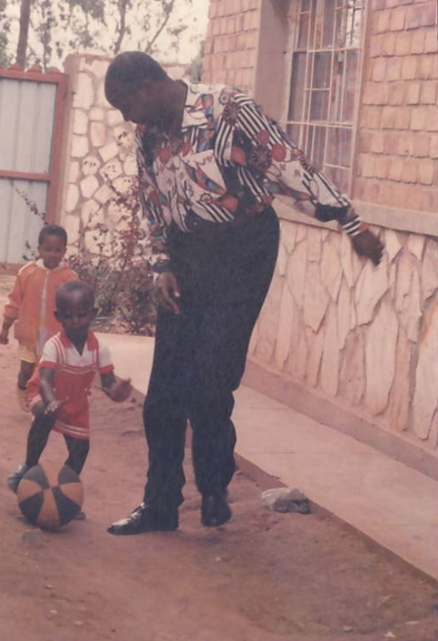
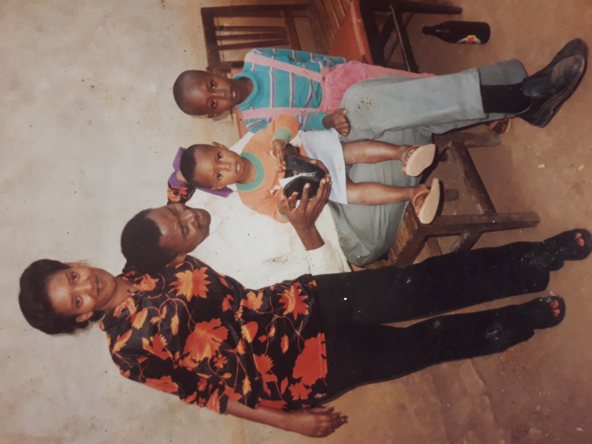

I was born in the DRC and lost my mother when I was just four years old. Growing up without a mother was never easy. But through those early challenges, I developed strength and independence that have guided me ever since.
I was born in the DRC and lost my mother when I was just four years old. Growing up without a mother was never easy. But through those early challenges, I developed strength and independence that have guided me ever since.

A quiet boy full of dreams, unaware of the challenges life had ahead – yet determined to overcome them all.
Alongside my cousin sister Chouchou in orange jacket and my uncle Eugene Nzanana.

A boy with silent dreams and a brave heart – these moments from childhood hold powerful memories of growth.
Picture members:
1.My cousin sister, Umurerwa Didine (in the black pant)
2.My little sister, Aline Uwazigira
3.My uncle Kalisa
4.And I
Didine, tu étais bien plus qu’une simple cousine — tu es devenue une grande sœur, une amie, et parfois même une seconde maman. Quand la vie était difficile, tu es intervenue avec un cœur tendre et des mains fortes. Tu as pris soin de moi et de ma petite sœur comme si nous étions les tiens. Tu t’es assurée que nous ne manquions jamais l’école, même lorsque ce n’était pas ta responsabilité. Tu nous as donné de l’amour, du réconfort et de la protection quand nous en avions le plus besoin. Je n’oublierai jamais ce que tu as fait pour nous — c’est gravé dans mon cœur. Merci d’avoir été cette héroïne silencieuse de notre enfance. Je garderai toujours avec moi ton amour et ta bonté.